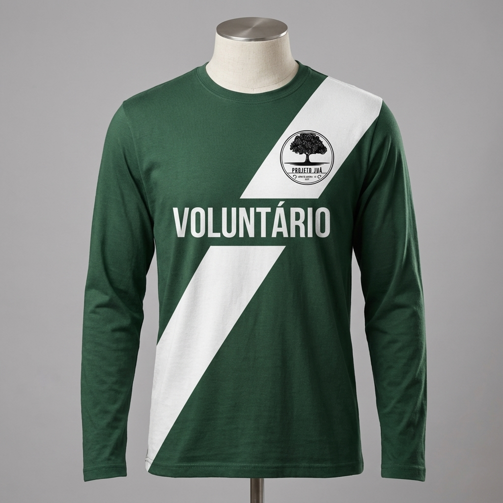

Identidade Visual
Nossos Uniformes
Nossos colaboradores usam fardamento oficial da fundação, facilitando a identificação e promovendo o espírito de equipe.

Voluntário
Para quem dedica seu tempo e amor ao plantio e cuidado das mudas.

Representante
Para líderes e representantes oficiais da fundação em eventos e ações externas.